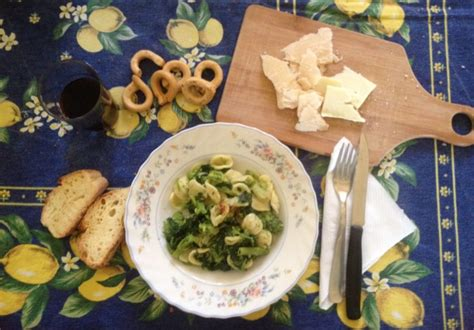
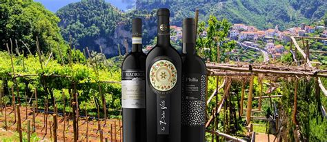
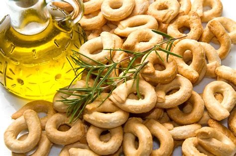

Kuchnia i wina z regionu Apulia
- Kuchnia Pugli to prawdziwa uczta dla podniebienia. Region słynie z wyśmienitych oliwek, świeżych owoców morza i aromatycznych ziół. Spróbuj tradycyjnych dań, takich jak orecchiette z brokułami, focaccia, burrata czy tradycyjne ciasto ze świeżymi migdałami. Każdy kęs to prawdziwa eksplozja smaków. Puglia to raj dla miłośników dobrej kuchni!
Kuchnia i wina z regionu Apulia
Orecchiette alle cime di rapa
Orecchiette alle cime di rapa to popularne danie z Apulii składające się z makaronu w kształcie uszek ręcznie wyrabianego z cieciorkami w sosie z rzepy brokułowej i czosnku. Idealne danie na letnią kolację.
Primitivo di Manduria
Primitivo di Manduria to doskonałe czerwone wino z regionu Apulia z wyrazistym smakiem.
Taralli
Taralli to tradycyjne krążki słonecznikowe lub oliwkowe, które można zjeść jako przekąskę.